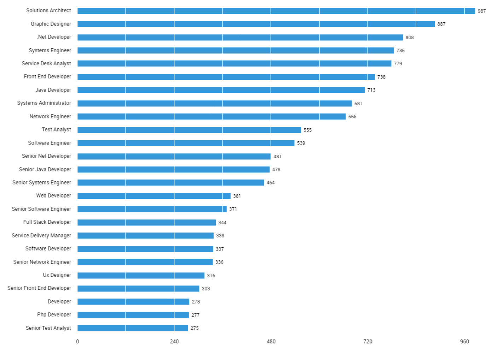
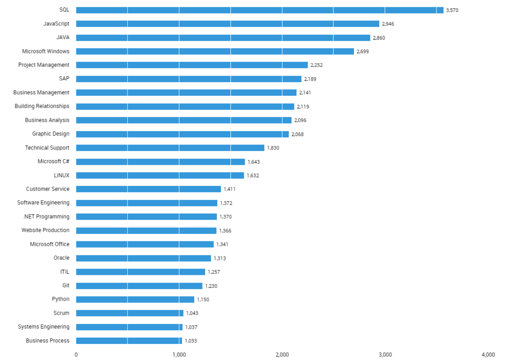
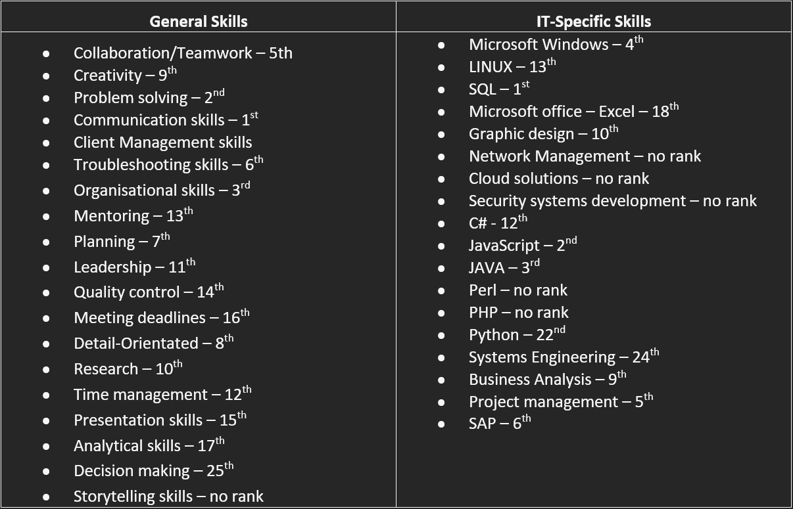

Industry Data
Ideal Job Rankings
Top IT Titles 2018
source: Labour Insight Jobs (Burning Glass Technologies 2018)
Cybersecurity Engineer
According to the industry data supplied by Burning Glass for 2018, Cyber Security Engineer does not receive a rank and is below 25th in terms of demand by employers. The demand for cyber security engineers is limited, however cybersecurity skills are present throughout many jobs that features highly in this data such as Network Engineer, Systems Administrator or Systems engineer. While Cyber Security Engineers are important in the IT industry, the data suggests that for titles with high demand, it is preferred to have cyber security skills as one skillset among many as opposed to it being your sole skillset.
Software Engineer
According to the industry data supplied by Burning Glass for 2018, Software Engineer ranks 11th in terms of demand by employers out of all job titles. This highlights the wide necessity for software engineers throughout the IT industry. The need for software development is everywhere in IT and this is evident from these results.
Data Analyst
According to the industry data supplied by Burning Glass for 2018, Data Analyst does not receive a rank and is less than 25th in terms of demand by employers. Data Analysts are extremely skilled and there is a limited supply of truly skilled data analysts due to the complex nature of the profession (Data Analyst: Career Path and Qualifications, 2021). This lack of supply could perhaps be what contributes to the lack of demand by employers. Data analysts are vital to the IT industry however due to low demand, finding jobs in this role may be challenging.
Cloud Engineer
According to the industry data supplied by Burning Glass for 2018, Cloud Engineer does not receive a rank and is less than 25th in terms of demand by employers. This could be due to the fact that the data from burning glass is 3 years old and potentially outdated. Cloud technology is an upcoming industry and has developed significantly, especially over recent years and is becoming a vital part of the IT industry as a whole. This greater need for cloud-based technology has led to an increase in demand in Cloud Engineering roles. It has been predicted that Cloud Engineer will be one of the top in-demand jobs in 2021 (So You Want to be a Cloud Engineer? - DATAVERSITY, 2021).
Video Game Designer
According to the industry data supplied by Burning Glass for 2018, Video Game Designer does not receive a rank and is less than 25th in terms of demand by employers. The game design industry is very competitive as the supply of jobs is very limited. Because jobs are limited in this industry, this may explain the lack of employer demand for game designers represented by this data
Network Engineer
According to the industry data supplied by Burning Glass for 2018, Network Engineer ranks 9th in terms of demand by employers out of all job titles. This highlights the wide necessity for network engineers throughout the IT industry. The need for network development and management is everywhere in IT and this is evident from these results.
nuRecruITs Required Skillset
Top Generic Skills 2018

source: Labour Insight Jobs (Burning Glass Technologies 2018)
Top IT skills
source: Labour Insight Jobs (Burning Glass Technologies 2018)
Below is a table showing the nuRecruITs required skillset. All skills that are required for each of our team member’s ideal jobs are listed here and separated into two categories, general skills, and IT specific skills. A ranking for each skill is provided based on results from industry data supplied by Burning Glass for 2018. This ranking system ranks the skills in terms of demand from employers.
IT-Specific Skills
Out of the 18 IT-specific skills within our group’s skillset, 13 of the skills appear in the Top IT Skills data provided by Burning Glass for 2018. This shows that our group has a very versatile IT-specific skillset that is in high demand by many employers. SQL was ranked 1st in the burning glass data, this highlights the importance of SQL in the IT industry and shows that this skill is most in demand by employers. Programming languages in our groups required skillset such as JavaScript, JAVA, and C# all featured highly in the Burning Glass data, ranking 2nd, 3rd, and 12th respectively. This gives insight into the importance of being proficient in multiple programming languages. Python also features in the Burning glass data; however, it doesn’t rank as highly as other programming languages, ranking at 22nd place in terms of demand by employers. Cloud solutions was one skill in our required skillset that didn’t receive a rank in the industry data provided by Burning Glass, meaning that it is below 25th place in terms of demand by employers. Cloud solutions are currently in high demand and is expected to be one of the top in-demand jobs in 2021 according to DATAVERSITY (So You Want to be a Cloud Engineer? - DATAVERSITY, 2021). The lack of cloud solutions ranking in this data could be due to the age of the data, which is three years old at the point of writing this in analysis. Cloud technologies are rapidly developing and the need for skills in the field has risen significantly since this data was gathered. Overall, our required skillset covers a wide range of IT-specific skills required by many different career paths.
General Skills
Out of the 19 generic skills within our group’s skillset, 18 of the skills appear in the Top Generic Skills data provided by Burning Glass for 2018. Generic skills are extremely important throughout the IT industry and each of our group members ideal jobs share large similarities in regard to required generic skills. Communication skills ranked as the top generic skill in demand by employers, coming in at 1st place by a large margin. Communication skills are required for every one of our group members ideal jobs, highlighting just how important of a skill it is. Other high-ranking skills include problem solving skills, ranking 2nd according to the data, and organisational skills, ranked 3rd. Storytelling skills are the only generic skill in our required skillset that didn’t receive a rank in the industry data provided by Burning Glass, meaning that it is below 25th place in terms of demand by employers. Storytelling skills are required specifically for fields that require a great amount of creativity such as game design and aren’t required for the majority of IT fields. This niche demand for storytelling leads to its lack of appearance in this data.
Non-Required IT-Specific Skills
The following are IT specific skills that aren’t included within our groups required skillset:
- Business Management – Ranked 6th
- Building Relationships – Ranked 7th
- Technical Support – Ranked 11th
While these skills are important throughout the IT industry, ranking 6th, 7th, and 11th, they do not feature in our required skillset.
Non-Required Geneic Skills
The following are generic skills that aren’t included within our groups required skillset:
- Writing – Ranked 4th
- Team Building – Ranked 18th
- Technical Support – Ranked 11th
- English – Ranked 21st
Generic skills are extremely important throughout the IT industry, because of this not many generic skills are excluded from our required skillset. The skills listed here, while important to the IT industry as a whole, aren’t part of our team’s required skillset.
Conclusion
The IT industry is constantly evolving, and this is evident by comparing the three-year-old data provided by Burning Glass to the current landscape of the industry today. New up and coming skills may not be in demand right now but in the future these skills may be essential for any IT professional. Its important to focus our learning to achieve an even balance of currently in demand skills and new upcoming skills in order to keep up with the rapid evolution of the IT industry. After viewing and analysing this data as a group it has made us realise that many skills we would expect to be in very high demand, often aren’t. This has made many of us within the group rethink what our required skillset should be and where we place our efforts in the future. Roles such as Network Engineer and Software Engineer are both in high demand and appear to be staying that way in the future, giving confidence to those who have chosen these as their ideal jobs, however, professions such as Game Design are not in high demand and the number of available roles is limited, despite being part of a very popular and exciting industry, this has caused our group to reconsider the viability of Game Design as a sole career path. Although some of our ideal jobs are not as in-demand as others, it is still important to follow our goals, if our dream job has limited demand for employment, this should not hinder us from trying to achieve our goals. Although demand by employers is a very important factor to consider when deciding a career path, there are other factors to consider such as, what do you enjoy doing and where you believe the industry is headed in the future.